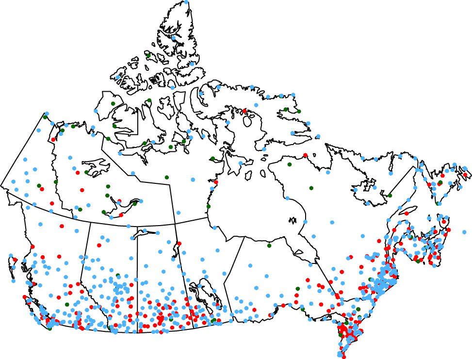

Homogenized Observation Data - CanHom & AHCCD
Summary Description
The Adjusted and Homogenized Canadian Climate Data (AHCCD) are climate station datasets of quality-controlled and homogenized historical climate data from Environment and Climate Change Canada (ECCC). They provide long-term station-based observations for temperature, precipitation, wind and atmospheric pressure across Canada. The datasets incorporate adjustments to the historical station data for non-climatic factors (e.g., station relocations, site exposure, instrumentation changes, observer, observing procedures) to ensure consistency and reliability. AHCCD data was developed for climate research, climate change studies and trend analysis. The latest versions of homogenized Canadian climate data have been published under the name Canadian Homogenized Surface Air Temperature (CanHomT V4) (Wan et al. (2025)). Publication of updated Canadian Homogenized Precipitation (CanHomP V2, Wang & Feng (2026)) and Canadian Homogenized Wind Speed data (CanHomW V2, Wang et al. (2025)) shall follow. Note that Zwiers & Wang (2026) found inconsistency in CanHomT V4. Detailed descriptions of the AHCCD/CanHom datasets are listed under the Dataset Characteristics below.

Dataset Characteristics
- Current version: The dataset is updated irregularly with the most recent data (although the website suggests annual updates).
- Available variables: temperature, precipitation, wind, station level pressure, sea level pressure (see variables section below)
- Temporal coverage: Varies per station and variable, data availability ranging between 1840 and 2023
- Temporal resolution: Annual, seasonal, monthly and daily values
- Spatial coverage: Stations across all Canadian provinces and territories
- Spatial resolution: Point locations across Canada
- Data type: Historical observations from ECCC climate stations, adjusted and homogenized using statistical methods
- Data format: netCDF, CSV, GeoJSON depending on data access portal.
- Web references:
Canadian Homogenized Surface Air Temperature (CanHomT V4) Adjusted and Homogenized Canadian Climate Data (AHCCD)
Technical documentation: Adjusted and homogenized Canadian climate data (AHCCD) - References:
AHCCD: CanHom: - Contact: Climate Services Support Desk, ClimatData.ca Online Support
When to use AHCCD & CanHom
- When you need information about past climate.
- When you don’t mind temporal or spatial discontinuities.
- When you need near-surface temperature or precipitation data.
- When you need information about extremes.
- When you need to detect historical trends.
- When you need to validate reanalysis data.
- When you need to establish local thresholds or reference climatologies.
Strengths and Limitations
Key Strengths of AHCCD & CanHom
| Strength | Description |
|---|---|
| Homogenized time series | Adjustments remove artificial shifts due to non-climatic influences, thus allowing more accurate trend analysis. |
| Long-term coverage. | Long term data containing many stations with over 100 years of record. |
| National consistency | Standardized methodologies applied across the Canadian network. |
| Data source for ECCC’s climate indicators | Used in the development of Canadian climate change indicators and official climate assessments. |
Limitations of AHCCD & CanHom
| Limitation | Description |
|---|---|
| Station coverage gaps | Sparse in some northern or remote regions, limiting spatial completeness. |
| Point locations | Station-based data may not represent broader regional conditions, particularly in more northern station sparse areas where the next station may be far away and in complex terrain where local conditions change over short distances. |
| Varying temporal coverage | The length of the data records vary by station and variable. There may be gaps in the station’s data or a station may have been retired. The dataset is updated at irregular intervals but the latest observations may not have been processed. |
| Historical instrumentation issues | Despite adjustments, early observations may be affected by poorer instrumentation or manual practices, which may increase uncertainty. |
Expert Guidance
Variables available in AHCCD & CanHom
For details click on variable group to uncollapse
Data Access
Daily AHCCD station data can be found on ClimateData.ca or downloaded via the Climate Data Extraction Tool (Monthly, seasonal and annual AHCCD station data). A collection of all daily AHCCD station data in a single netCDF file is available on PAVICS.